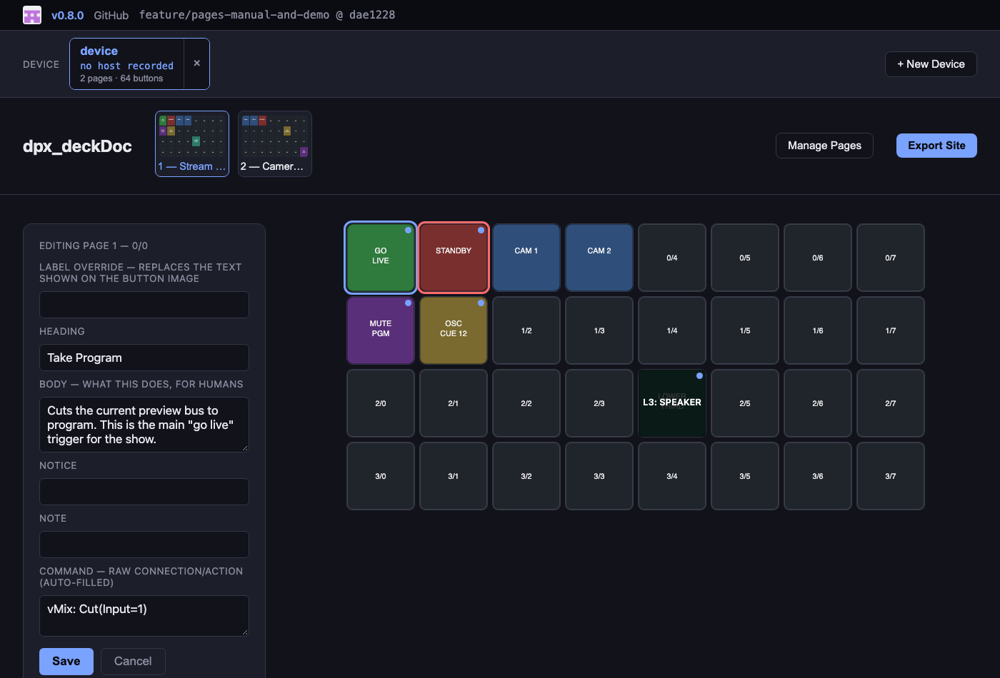
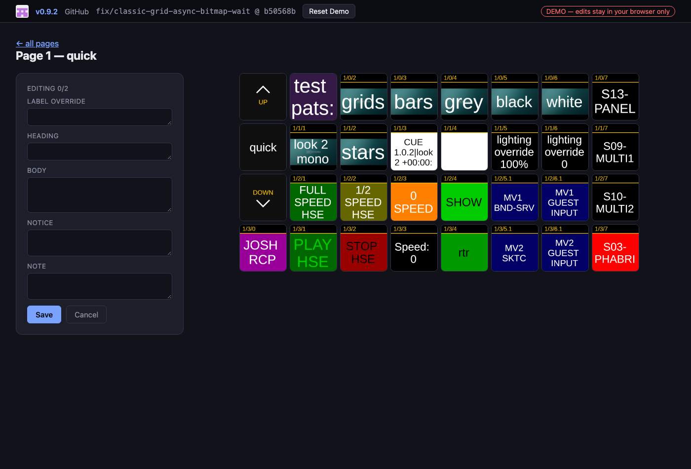

Auto-generated documentation for your Bitfocus Companion rig
Capture every button, annotate it, ship it as a browsable, editable site — no more live walkthroughs to hand off a show.


If you run Bitfocus Companion to drive a Stream Deck (or any StreamDeck-style panel) for a show, a real rig can end up with dozens of pages and hundreds of buttons wired to OSC, MIDI, ATEM, vMix, QLab, disguise, and everything else Companion talks to — none of it obvious to someone who didn't build it. dpx_deckDoc turns a live Companion instance into a browsable, editable reference site: a real picture of every button, what it actually does, and a place to write that down — without hand-screenshotting anything.
The demo below is a real captured rig — 91 pages, 2823 buttons — and it's fully editable in your browser. Nothing you type there leaves your own browser; a "Reset Demo" button puts it back the way it was. →Quickstart
Three commands, in order — you don't need to learn the whole tool to get a first result.
git clone https://github.com/dubpixel/dpx_deckDoc.git
cd dpx_deckDoc
npm installnode src/cli.js scrape --host 10.0.0.5 --device my-rigReplace the IP with your Companion instance and my-rig with whatever you want to call it. This is the only command that talks to Companion — it pulls the config export, walks every page, and captures every button's real rendered image, in one shot. Read-only; nothing on the Companion side changes.
node src/cli.js serve --out devicesOpen http://localhost:4321. Every button is already labeled with what it's wired to. Click any button to add a plain-English write-up, then hit Export Site to freeze it into a self-contained handoff folder — no server needed to view it.
The three commands, in plain terms
| Command | What it's for | When you'd run it |
|---|---|---|
scrape | Capture a Companion instance | Once per rig, and again if the layout changes |
serve | The editor you write notes in | Whenever you're actively documenting |
build | Freeze one device to a static site | Handoff time (also the in-browser "Export Site" button) |
Each Companion instance you scrape becomes its own device under devices/<name>/ — scrape as many rigs as you want and switch between them in the editor. New devices can also be added straight from the browser via + New Device.
Annotation fields
| Field | Where it comes from | Rendered as |
|---|---|---|
| Heading | You write it | Bold title |
| Body | You write it | Plain paragraph |
| Notice | You write it | Red — "don't do this unless..." warnings |
| Note | You write it | Italic — a quieter aside |
| Command | Auto-filled from the config export | Raw connection/action reference |
| Label override | You write it, optional | Replaces the on-image text, shown as an overlay |
scrape pre-fills Command for every button from the real config export — it never invents text, and never overwrites a hand-edit. Body/Notice/Note/Label override always start empty and are entirely yours.
Screenshots
Both taken from the live demo — real captured button art, not placeholders.


Managing pages & devices
- Manage Pages lets you include/exclude specific pages from the exported site — hide internal test pages from a handoff doc
- Each device card shows the real host:port it was scraped from and when, so you can tell rigs apart at a glance
- Devices can be removed from the editor with the × on their card
Requirements
- Node.js —
npm installpulls in Playwright, used only duringscrape - A Companion instance reachable over HTTP (its web UI port, usually
8000)
Testing the tool itself
npm test